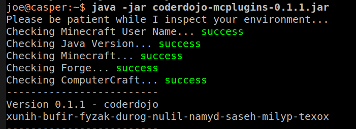

CoderDojo Downloads
coderdojo-0.1.2.jar
Installation Instructions
Download latest coderdojo.jar from above
Run the jar from a command prompt.
$ java -jar coderdojo-0.1.2.jar

Email output to show your environment is setup correctly